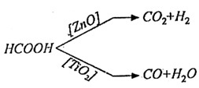
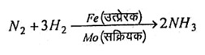

Q.19 : उत्प्रेरक के लक्षणों का वर्णन कीजिए।
उत्तर - एक उत्प्रेरक के विभिन्न लक्षण निम्नलिखित हैं -
(i) अपरिवर्तनीयता - जब उत्प्रेरक किसी रासायनिक अभिक्रिया को उत्प्रेरित करता है तो अभिक्रिया के अंत में उत्प्रेरक के द्रव्यमान (mass) तथा रासायनिक संघटन (chemical composition) में परिवर्तन नहीं होता जबकि उत्प्रेरक में भौतिक परिवर्तन हो सकते हैं।
(ii) विशिष्ट प्रकृति - उत्प्रेरक विशिष्ट प्रकृति के होते हैं अर्थात् प्रत्येक अभिक्रिया को एक विशिष्ट प्रकार का उत्प्रेरक ही उत्प्रेरित कर सकता है यदि एक अभिक्रिया को दो भिन्न-भिन्न प्रकार के उत्प्रेरक उत्प्रेरित करते हैं तो उनसे बनने वाले उत्पाद भी भिन्न-भिन्न होते हैं।

(iii) उत्प्रेरक की सूक्ष्म मात्रा - किसी अभिक्रिया को उत्प्रेरित करने के लिए उत्प्रेरक की सूक्ष्म मात्रा की ही आवश्यकता होती है, जैसे - हाइड्रोजन परऑक्साइड के कई मिलियन लिटर को केवल 1 gm प्लैटिनम द्वारा विघटित किया जा सकता है।
(iv) अनुकूल तापमान- यह देखा गया है कि किसी रासायनिक अभिक्रिया का ताप, एक निश्चित मान तक बढ़ाने पर उत्प्रेरकों की उत्प्रेरकीय क्षमता बढ़ जाती है। अतः "वह तापमान जिस पर उत्प्रेरकों की कार्य करने की क्षमता अधिकतम होती है, अनुकूल तापमान (optimum temperature) कहलाता है।"
(v) उत्प्रेरकीय वर्धक या सक्रियक - कुछ पदार्थ उत्प्रेरकों के समान कार्य करने में सक्षम नहीं होते हैं, परन्तु यदि इन्हें उत्प्रेरकों के साथ मिला दिया जाये तो ये उत्प्रेरकों की कार्य करने की क्षमता को बढ़ा देते हैं। इन पदार्थों को उत्प्रेरकीय वर्धक (catalytic promoter) या सक्रियक (activator) कहते हैं। उदाहरण के लिए, अमोनिया निर्माण की हैबर विधि में Mo सक्रियक का कार्य करता है।

(vi) उत्प्रेरकीय विष या अवरोधक - कुछ पदार्थ ऐसे होते हैं, जो उत्प्रेरकों की कार्यक्षमता को कम अथवा नष्ट कर देते हैं। ये पदार्थ उत्प्रेरकीय विष (catalytic poison) या अवरोधक (inhibitor) कहलाते हैं। उदाहरण के लिए, H2SO4 निर्माण की सम्पर्क विधि में As की सूक्ष्म मात्रा, Pt उत्प्रेरक की उत्प्रेरकीय क्षमता को नष्ट कर देती है।